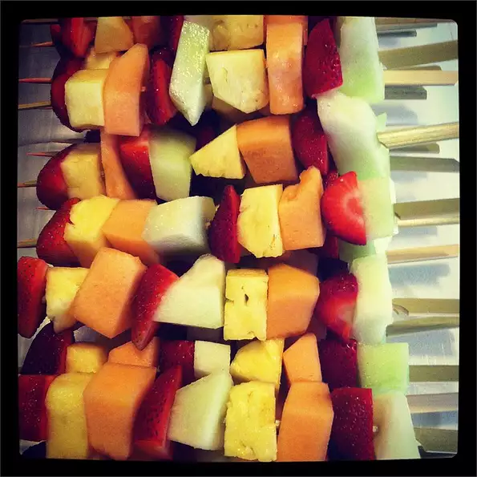

Fruity Fun Skewers

I was looking for a different way to serve fruit, and it just popped into my head! Why not use fruit skewers?
Ingredients
- 5 large strawberries, halved
- ¼ cantaloupe, cut into balls or cubes
- 2 bananas, peeled and cut into chunks
- 1 apple, cut into chunks
- 20 skewers
Steps
- Thread the strawberries, cantaloupe, banana and apple pieces alternately onto skewers, placing at least 2 pieces of fruit on each skewer. Arrange the fruit skewers decoratively on a serving platter.